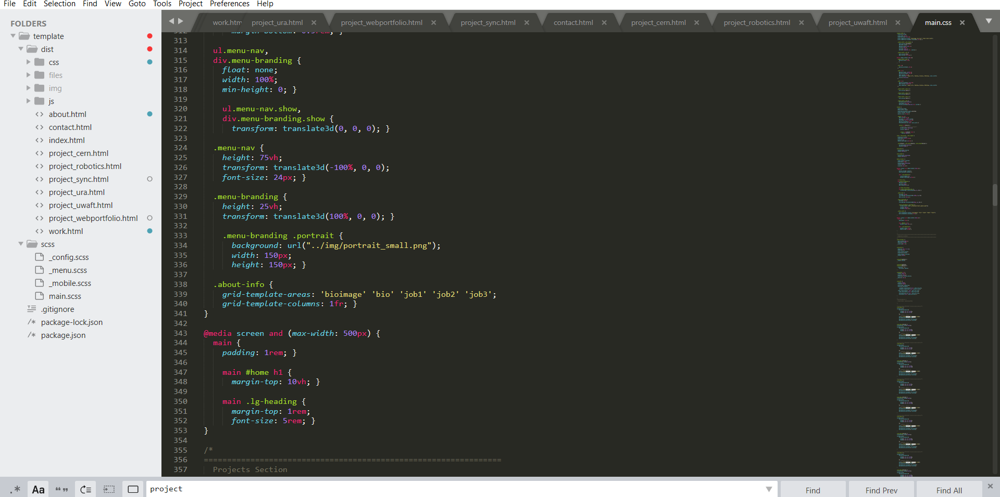
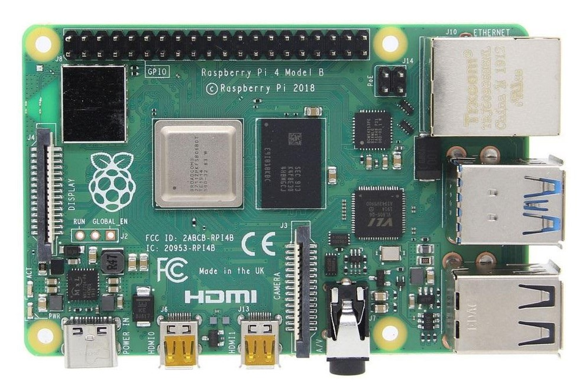

Personal Portfolio Website
What you are currently viewing has been built from scratch using HTML and CSS, it is currently being hosted on a raspberry pi


About the Project
Developed from sratch I built this website writing the HTML and CSS for it using sublime text 3 as my editor. A raspberry pi 4 was
configured as the host sever to provide hosting for the website running apache2 for web hosting. Further, a bash script was made to autmatically update the public IP address using GoDaddy’s API’s for DDNS.
HTML | CSS | Rasberry Pi 4 | Web Design
Link to Github
